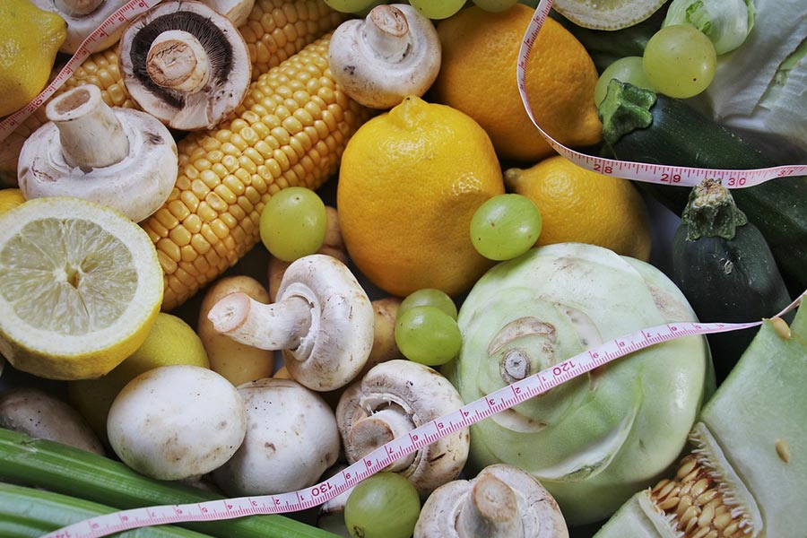

Zuccheri e Carie
I batteri della placca si nutrono di zuccheri producendo acidi che demineralizzano lo smalto. Ridurre la frequenza e la quantità di zuccheri è la misura preventiva più efficace contro la carie.

Alimentazione e stile di vita come fondamento del benessere
La dieta intesa come “stile di vita” è il primo passo per ritrovare il benessere psicofisico. Ciò che mangiamo ogni giorno ha un impatto diretto e profondo sulla salute della nostra bocca: denti, gengive e mucose risentono delle abitudini alimentari tanto quanto qualsiasi altro organo del corpo.
La consulenza dietologica in collaborazione con lo Studio Dentistico Torricelli permette di individuare le abitudini alimentari che possono favorire carie, erosioni dentali, problemi gengivali e alitosi, e di costruire un piano nutrizionale personalizzato che supporti sia la salute generale che quella orale.
L’alimentazione influenza la salute orale in modi che spesso non si conoscono.
I batteri della placca si nutrono di zuccheri producendo acidi che demineralizzano lo smalto. Ridurre la frequenza e la quantità di zuccheri è la misura preventiva più efficace contro la carie.
La carenza di vitamina C, vitamina D, calcio e altri micronutrienti indebolisce le difese immunitarie e la salute dei tessuti gengivali, favorendo parodontiti e processi infiammatori cronici.
Il reflusso gastroesofageo e una dieta ricca di alimenti acidi (agrumi, bevande gassate, aceto) causano l’erosione dello smalto, rendendo i denti più sensibili e vulnerabili alla carie.